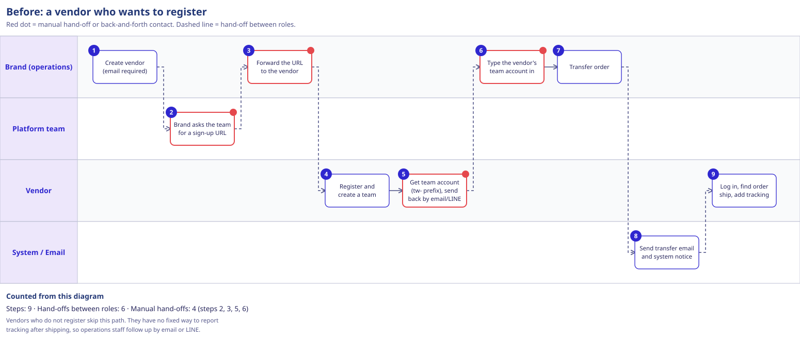

Problem
Vendors who ship for a brand rarely sign up, because signing up costs them more than it returns.
Brands on the platform sometimes ship an order through a vendor. One click transfers the order and emails the vendor. A vendor without an account can only reply by email, and there is no fixed way to report tracking after shipping, so operations staff follow up by email or LINE.
Signing up meant going through the platform team. The brand asked for a sign-up URL, forwarded it, waited for the vendor to register, received the team account back by email or LINE, and typed it in. Operations said vendors often answered that it was too much trouble and asked to keep using email.
Evidence: interviews with brand-side operations staff and my own walkthrough of their process. The staff work inside the same group, so the vendor side is relayed. There was no formal user testing.
Design
- The transfer email carries a one-time link tied to that brand and vendor, much like a promo code.
- The sign-up page looks like the usual one, with email and referral source prefilled and locked.
- When the vendor creates a team, the system fills the team account into the brand's vendor record and notifies the brand.
- A vendor who already has an account logs in and lands on the order. One who has an account but is not linked sees a confirmation screen after login.
Before and after


Before 9 steps, 4 manual hand-offs
- BrandCreate the vendor record (email required)
- ManaOrder teamBrand asks the team for a sign-up URL
- BrandForward the URL to the vendor
- VendorRegister and create a team
- VendorGet the team account (tw- prefix) and send it back by email or LINE
- BrandType the vendor's team account in
- BrandTransfer the order
- SystemSend the transfer email and a system notice
- VendorLog in, find the order, ship, add tracking
After 6 steps, no manual hand-offs
- BrandCreate the vendor record (email required)
- BrandTransfer the order
- SystemSend the transfer email with a one-time link
- VendorOpen the link, register and create a team
- SystemFill the team account into the vendor record
- VendorLog in, find the order, ship, add tracking
Manual hand-off
| Counted from the diagrams | Before | After |
|---|---|---|
| Manual hand-offs | 4 | 0 |
| Steps | 9 | 6 |
| Hand-offs between roles | 6 | 4, all through the system |
These numbers come from the diagrams. They are not measured results, because the feature did not launch.
Design decisions
| Decision | Why |
|---|---|
| Fill in, do not create | The brand has already created the vendor record and entered the email. Only the team account is missing, so the link fills that gap. |
| Bind by code, not by email | A vendor may use a different email. The link carries a code for the brand and vendor, and the sign-up page locks the email and requires verification, so forwarding the link cannot bind the wrong party. |
| Log in before binding | My first screen showed the team account and a Confirm button before login, so anyone with the link could bind. I changed it so login comes first. |
| Handle old links | Links in older transfer emails stay clickable, so they need an expired page with a next step. |
| No back-fill for orders already sent | Those orders went out by email. Transferring them again would duplicate them, so the requirements say so to keep it from reading as a bug. |
Screen: account exists, not yet linked
A vendor who already has an account clicks the link and, after logging in, sees this screen. With one team the account is filled in. With several, a dropdown appears. Cancel does not link and the link stays valid.
Give your team account to the brand?
Share your team account with Example Brand so it can transfer orders to you.
tw-yourcompany Confirm CancelExample data only.
Companion: a guide for vendors
I also wrote an eight-step guide that takes a vendor from sign-up to filling in tracking. These are the main changes I made to it.
| Problem | Change |
|---|---|
| Seven callouts on one screenshot | Kept one red box on the team account, the only place a reader could go wrong. Callouts mark mistakes and order, not every field. |
| The account example could lose its prefix | Step 2 warns about the tw- prefix and step 4 stresses the full account. |
| What to send the brand was in the last step | Moved it into a warning box at the top, with how to find the account. |
| Text said tracking syncs on its own | The real screen needs Save. Corrected it and added a warning. |
The guide leaves out email verification, which the newer requirements added. It needs a check against the live flow.
Where it stands
The feature was postponed because the login flow turned out to be complex. My manager took it over before launch. Edge cases I left open for the product manager: a vendor with an account but no team, a login email that does not match, and one email with several teams.
Next time I would talk to the engineers about login limits before fixing the scope.
Screens and account names are example data. Numbers come from process diagrams and were not measured.